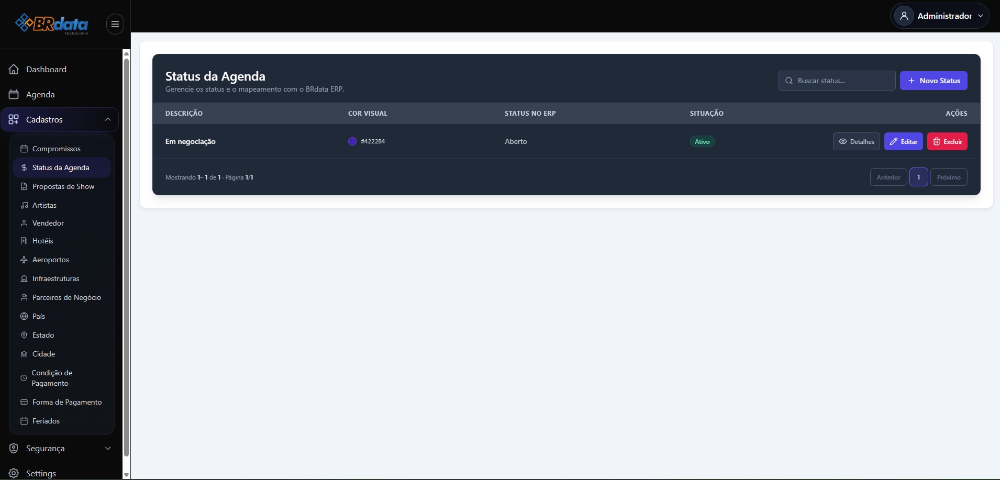
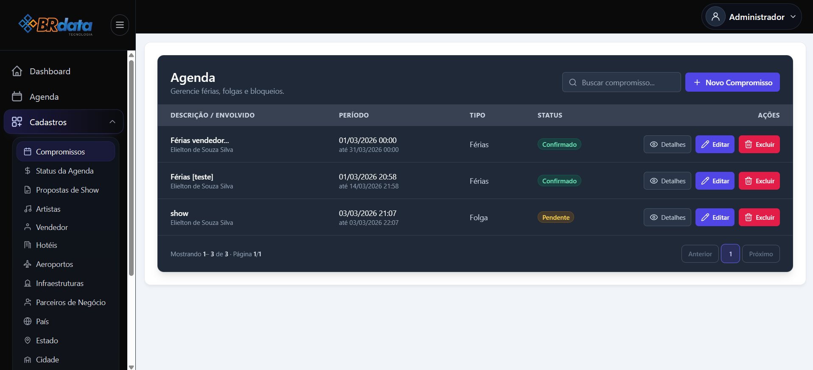

Conheça Nossas Soluções

Event Flow - Arquitetura
Estrutura base para orquestração de eventos em sistemas distribuídos.

Event Flow - Dashboard
Visão analítica e controle de performance para processos.

Gestão Financeira Enterprise
Integração completa de contas, fluxo de caixa e relatórios fiscais.

Integração Service Desk GLPI
Customização e backend para automação de chamados técnicos.

GMD Matrix - Performance Agro
Inteligência para otimização de Ganho de Peso Médio Diário em rebanhos.

Supply Chain - Visibilidade SAP
Painéis de controle para monitoramento de logística e supply chain.
Deslize para o lado para ver todos os projetos.